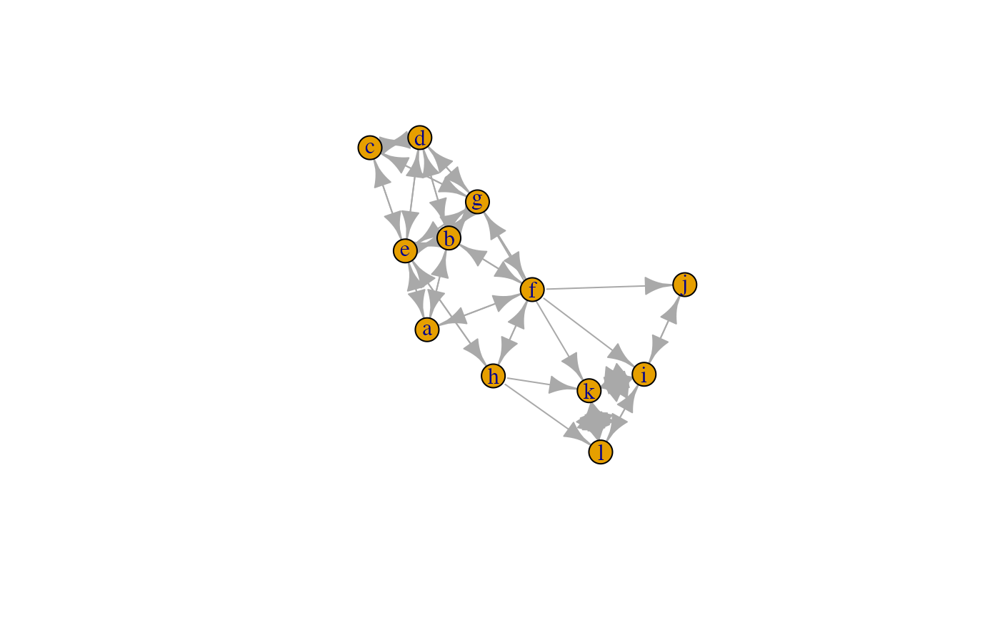
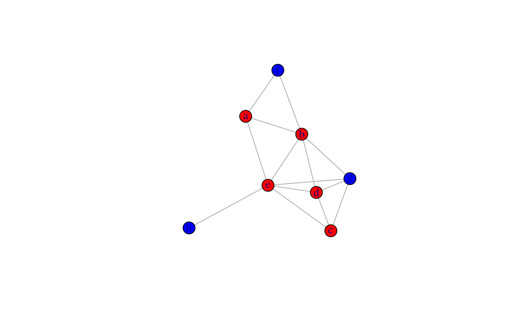
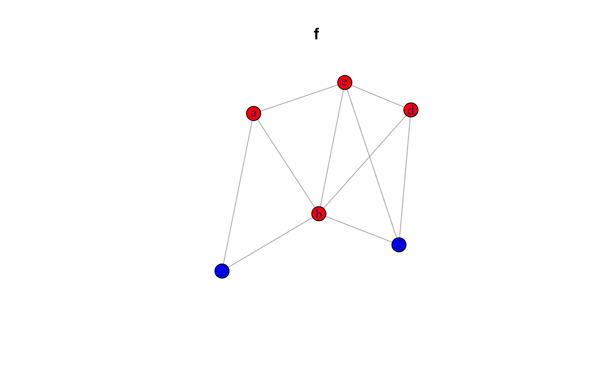
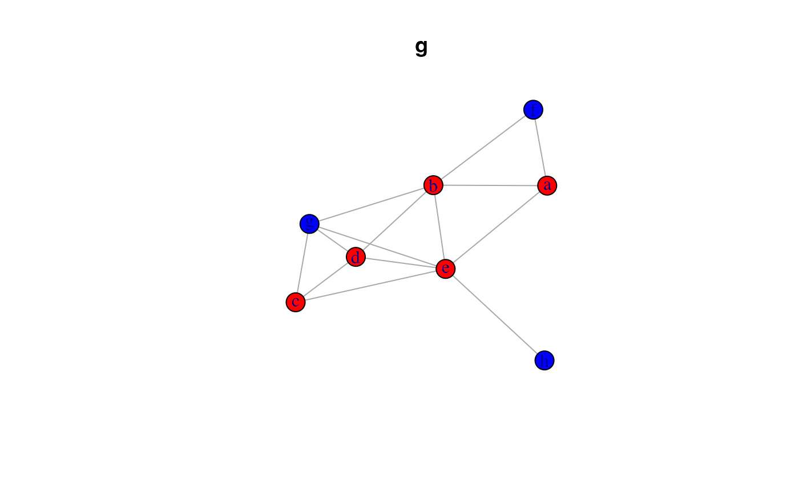
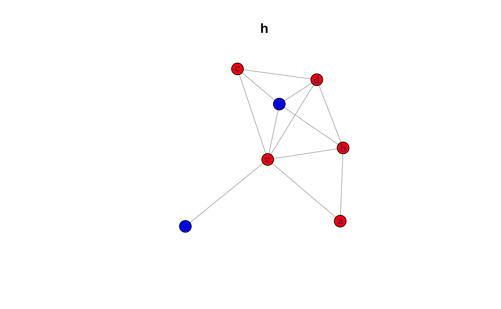

Installation
You can install the development version from github/anespinosa:
# install.packages("devtools")
devtools::install_github("anespinosa/netmem")Multilayers
Multilayer networks is a framework that considers complex patterns of relationships between the same and/or different nodes. However, from a social network and sociological perspective, different types of multilayer structures are often referred to as multiplex networks (or multi-relational), multilevel networks, network of networks Kivelä et al. (2014), two-mode networks, among others. Furthermore, and from a matrix perspective, the ‘backbone’ of these complex structures are mainly represented through the comfortable combination of different types of matrices. The primary matrix used in social network analysis is the adjacency matrix or sociomatrix and the incidence matrix.
Two-mode networks
There are different ways of referring to incidence matrices. From the social network perspective is often considered as affiliation network, which consist of a set of binary relationships between members of two sets of items (i.e., “is a member of” or “is a participant in” or “has”) (Borgatti and Halgin, 2011). In general, these networks have a bipartite property in which there are two classes such that all ties occur only between classes and never within classes.
For example, in this section we will use the classical example of the
Southern Woman extracted from the R package classicnets:
A <- matrix(
c(
1, 1, 1, 1, 1, 1, 0, 1, 1, 0, 0, 0, 0, 0,
1, 1, 1, 0, 1, 1, 1, 1, 0, 0, 0, 0, 0, 0,
0, 1, 1, 1, 1, 1, 1, 1, 1, 0, 0, 0, 0, 0,
1, 0, 1, 1, 1, 1, 1, 1, 0, 0, 0, 0, 0, 0,
0, 0, 1, 1, 1, 0, 1, 0, 0, 0, 0, 0, 0, 0,
0, 0, 1, 0, 1, 1, 0, 1, 0, 0, 0, 0, 0, 0,
0, 0, 0, 0, 1, 1, 1, 1, 0, 0, 0, 0, 0, 0,
0, 0, 0, 0, 0, 1, 0, 1, 1, 0, 0, 0, 0, 0,
0, 0, 0, 0, 1, 0, 1, 1, 1, 0, 0, 0, 0, 0,
0, 0, 0, 0, 0, 0, 1, 1, 1, 0, 0, 1, 0, 0,
0, 0, 0, 0, 0, 0, 0, 1, 1, 1, 0, 1, 0, 0,
0, 0, 0, 0, 0, 0, 0, 1, 1, 1, 0, 1, 1, 1,
0, 0, 0, 0, 0, 0, 1, 1, 1, 1, 0, 1, 1, 1,
0, 0, 0, 0, 0, 1, 1, 0, 1, 1, 1, 1, 1, 1,
0, 0, 0, 0, 0, 0, 1, 1, 0, 1, 1, 1, 0, 0,
0, 0, 0, 0, 0, 0, 0, 1, 1, 0, 0, 0, 0, 0,
0, 0, 0, 0, 0, 0, 0, 0, 1, 0, 1, 0, 0, 0,
0, 0, 0, 0, 0, 0, 0, 0, 1, 0, 1, 0, 0, 0
),
byrow = TRUE, ncol = 14
)As a common practice, an incidence matrix is often converted to adjacent matrices. These are given by the matrix product \(AA^T\) and \(A^TA\), where \(A\) is the incidence matrix and matrix \(A^T\) is the transpose of \(A\). The relationship between these matrices in the context of social networks was explored by Breiger (1974).
matrix_projection(A)
#> $matrix1
#> [,1] [,2] [,3] [,4] [,5] [,6] [,7] [,8] [,9] [,10] [,11] [,12] [,13]
#> [1,] 3 2 3 2 3 3 2 3 1 0 0 0 0
#> [2,] 2 3 3 2 3 3 2 3 2 0 0 0 0
#> [3,] 3 3 6 4 6 5 4 5 2 0 0 0 0
#> [4,] 2 2 4 4 4 3 3 3 2 0 0 0 0
#> [5,] 3 3 6 4 8 6 6 7 3 0 0 0 0
#> [6,] 3 3 5 3 6 8 5 7 4 1 1 1 1
#> [7,] 2 2 4 3 6 5 10 8 5 3 2 4 2
#> [8,] 3 3 5 3 7 7 8 14 9 4 1 5 2
#> [9,] 1 2 2 2 3 4 5 9 12 4 3 5 3
#> [10,] 0 0 0 0 0 1 3 4 4 5 2 5 3
#> [11,] 0 0 0 0 0 1 2 1 3 2 4 2 1
#> [12,] 0 0 0 0 0 1 4 5 5 5 2 6 3
#> [13,] 0 0 0 0 0 1 2 2 3 3 1 3 3
#> [14,] 0 0 0 0 0 1 2 2 3 3 1 3 3
#> [,14]
#> [1,] 0
#> [2,] 0
#> [3,] 0
#> [4,] 0
#> [5,] 0
#> [6,] 1
#> [7,] 2
#> [8,] 2
#> [9,] 3
#> [10,] 3
#> [11,] 1
#> [12,] 3
#> [13,] 3
#> [14,] 3
#>
#> $matrix2
#> [,1] [,2] [,3] [,4] [,5] [,6] [,7] [,8] [,9] [,10] [,11] [,12] [,13]
#> [1,] 8 6 7 6 3 4 3 3 3 2 2 2 2
#> [2,] 6 7 6 6 3 4 4 2 3 2 1 1 2
#> [3,] 7 6 8 6 4 4 4 3 4 3 2 2 3
#> [4,] 6 6 6 7 4 4 4 2 3 2 1 1 2
#> [5,] 3 3 4 4 4 2 2 0 2 1 0 0 1
#> [6,] 4 4 4 4 2 4 3 2 2 1 1 1 1
#> [7,] 3 4 4 4 2 3 4 2 3 2 1 1 2
#> [8,] 3 2 3 2 0 2 2 3 2 2 2 2 2
#> [9,] 3 3 4 3 2 2 3 2 4 3 2 2 3
#> [10,] 2 2 3 2 1 1 2 2 3 4 3 3 4
#> [11,] 2 1 2 1 0 1 1 2 2 3 4 4 4
#> [12,] 2 1 2 1 0 1 1 2 2 3 4 6 6
#> [13,] 2 2 3 2 1 1 2 2 3 4 4 6 7
#> [14,] 2 2 3 2 1 1 2 2 2 3 3 5 6
#> [15,] 1 2 2 2 1 1 2 1 2 3 3 3 4
#> [16,] 2 1 2 1 0 1 1 2 2 2 2 2 2
#> [17,] 1 0 1 0 0 0 0 1 1 1 1 1 1
#> [18,] 1 0 1 0 0 0 0 1 1 1 1 1 1
#> [,14] [,15] [,16] [,17] [,18]
#> [1,] 2 1 2 1 1
#> [2,] 2 2 1 0 0
#> [3,] 3 2 2 1 1
#> [4,] 2 2 1 0 0
#> [5,] 1 1 0 0 0
#> [6,] 1 1 1 0 0
#> [7,] 2 2 1 0 0
#> [8,] 2 1 2 1 1
#> [9,] 2 2 2 1 1
#> [10,] 3 3 2 1 1
#> [11,] 3 3 2 1 1
#> [12,] 5 3 2 1 1
#> [13,] 6 4 2 1 1
#> [14,] 8 4 1 2 2
#> [15,] 4 5 1 1 1
#> [16,] 1 1 2 1 1
#> [17,] 2 1 1 2 2
#> [18,] 2 1 1 2 2Another concept often used is bipartite network, which means that the graph’s nodes can be partitioned into two classes. While in some cases, these classes can be different entities (e.g., actors participating in activities or belonging to clubs), this assumption is not always clear. For example, dichotomic attributes of ascribed characteristics also have a bipartite property.
An approach that was devised specifically for affiliation data, was provided by Bonacich (1972):
bonacich_norm(A)
#> [,1] [,2] [,3] [,4] [,5] [,6] [,7]
#> [1,] 1.0000000 0.7947869 0.8554094 0.7947869 0.6339746 1.0000000 0.6339746
#> [2,] 0.7947869 1.0000000 0.7947869 0.8571429 0.6796228 1.0000000 1.0000000
#> [3,] 0.8554094 0.7947869 1.0000000 0.7947869 1.0000000 1.0000000 1.0000000
#> [4,] 0.7947869 0.8571429 0.7947869 1.0000000 1.0000000 1.0000000 1.0000000
#> [5,] 0.6339746 0.6796228 1.0000000 1.0000000 1.0000000 0.6666667 0.6666667
#> [6,] 1.0000000 1.0000000 1.0000000 1.0000000 0.6666667 1.0000000 0.8386095
#> [7,] 0.6339746 1.0000000 1.0000000 1.0000000 0.6666667 0.8386095 1.0000000
#> [8,] 1.0000000 0.6077190 1.0000000 0.6077190 0.0000000 0.7500000 0.7500000
#> [9,] 0.6339746 0.6796228 1.0000000 0.6796228 0.6666667 0.6666667 0.8386095
#> [10,] 0.4494897 0.5000000 0.6339746 0.5000000 0.4686270 0.4686270 0.6666667
#> [11,] 0.4494897 0.3203772 0.4494897 0.3203772 0.0000000 0.4686270 0.4686270
#> [12,] 0.2898979 0.2052131 0.2898979 0.2052131 0.0000000 0.3660254 0.3660254
#> [13,] 0.2052131 0.2857143 0.3538894 0.2857143 0.3203772 0.3203772 0.5000000
#> [14,] 0.0000000 0.2052131 0.2572843 0.2052131 0.2742919 0.2742919 0.4494897
#> [15,] 0.2108967 0.4220645 0.3660254 0.4220645 0.4142136 0.4142136 0.6043561
#> [16,] 1.0000000 0.5000000 1.0000000 0.5000000 0.0000000 0.6339746 0.6339746
#> [17,] 0.4580399 0.0000000 0.4580399 0.0000000 0.0000000 0.0000000 0.0000000
#> [18,] 0.4580399 0.0000000 0.4580399 0.0000000 0.0000000 0.0000000 0.0000000
#> [,8] [,9] [,10] [,11] [,12] [,13] [,14]
#> [1,] 1.0000000 0.6339746 0.4494897 0.4494897 0.2898979 0.2052131 0.0000000
#> [2,] 0.6077190 0.6796228 0.5000000 0.3203772 0.2052131 0.2857143 0.2052131
#> [3,] 1.0000000 1.0000000 0.6339746 0.4494897 0.2898979 0.3538894 0.2572843
#> [4,] 0.6077190 0.6796228 0.5000000 0.3203772 0.2052131 0.2857143 0.2052131
#> [5,] 0.0000000 0.6666667 0.4686270 0.0000000 0.0000000 0.3203772 0.2742919
#> [6,] 0.7500000 0.6666667 0.4686270 0.4686270 0.3660254 0.3203772 0.2742919
#> [7,] 0.7500000 0.8386095 0.6666667 0.4686270 0.3660254 0.5000000 0.4494897
#> [8,] 1.0000000 0.7500000 0.7500000 0.7500000 0.6516685 0.6077190 0.5635083
#> [9,] 0.7500000 1.0000000 0.8386095 0.6666667 0.5505103 0.6796228 0.4494897
#> [10,] 0.7500000 0.8386095 1.0000000 0.8386095 0.7257081 1.0000000 0.6339746
#> [11,] 0.7500000 0.6666667 0.8386095 1.0000000 1.0000000 1.0000000 0.6339746
#> [12,] 0.6516685 0.5505103 0.7257081 1.0000000 1.0000000 1.0000000 0.7427157
#> [13,] 0.6077190 0.6796228 1.0000000 1.0000000 1.0000000 1.0000000 0.7947869
#> [14,] 0.5635083 0.4494897 0.6339746 0.6339746 0.7427157 0.7947869 1.0000000
#> [15,] 0.4833148 0.6043561 0.7759908 0.7759908 0.6339746 0.7387961 0.6909830
#> [16,] 1.0000000 1.0000000 1.0000000 1.0000000 1.0000000 1.0000000 0.4580399
#> [17,] 0.6909830 0.6339746 0.6339746 0.6339746 0.5419601 0.5000000 1.0000000
#> [18,] 0.6909830 0.6339746 0.6339746 0.6339746 0.5419601 0.5000000 1.0000000
#> [,15] [,16] [,17] [,18]
#> [1,] 0.2108967 1.0000000 0.4580399 0.4580399
#> [2,] 0.4220645 0.5000000 0.0000000 0.0000000
#> [3,] 0.3660254 1.0000000 0.4580399 0.4580399
#> [4,] 0.4220645 0.5000000 0.0000000 0.0000000
#> [5,] 0.4142136 0.0000000 0.0000000 0.0000000
#> [6,] 0.4142136 0.6339746 0.0000000 0.0000000
#> [7,] 0.6043561 0.6339746 0.0000000 0.0000000
#> [8,] 0.4833148 1.0000000 0.6909830 0.6909830
#> [9,] 0.6043561 1.0000000 0.6339746 0.6339746
#> [10,] 0.7759908 1.0000000 0.6339746 0.6339746
#> [11,] 0.7759908 1.0000000 0.6339746 0.6339746
#> [12,] 0.6339746 1.0000000 0.5419601 0.5419601
#> [13,] 0.7387961 1.0000000 0.5000000 0.5000000
#> [14,] 0.6909830 0.4580399 1.0000000 1.0000000
#> [15,] 1.0000000 0.5857864 0.5857864 0.5857864
#> [16,] 0.5857864 1.0000000 0.7683375 0.7683375
#> [17,] 0.5857864 0.7683375 1.0000000 1.0000000
#> [18,] 0.5857864 0.7683375 1.0000000 1.0000000The difference between affiliation networks and bipartite networks allowed us to avoid confounding the concept of social proximity (e.g., being part of the same laboratory) with social similarity (e.g., having an ascribed gender) (Rivera et al., 2010). In addition, this distinction is important because these mechanisms are often considered competing alternatives to understanding social relationships.
Two-mode networks is a broader concept that emphasizes the difference between entities of different levels. Therefore, these entities are likewise differentiated as rows and columns in the incidence matrix.
Some researchers differentiate between the informational or socio-cognitive dimensions and social networks of concrete relations - or proxies - between agents (Leydesdorff, 2008). For example, informational or socio-cognitive networks can be an incidence matrix of actors and survey’s items, citation networks or a tweet message. Therefore, the incidence matrix of socio-cognitive networks are often called occurrence networks.
For example, in scientometric, information is often explored using co-occurrence of overlapping ties:
minmax_overlap(A, row = TRUE, min = TRUE)
#> [,1] [,2] [,3] [,4] [,5] [,6] [,7] [,8] [,9] [,10] [,11] [,12] [,13]
#> [1,] 8 6 7 6 3 4 3 3 3 2 2 2 2
#> [2,] 6 7 6 6 3 4 4 2 3 2 1 1 2
#> [3,] 7 6 8 6 4 4 4 3 4 3 2 2 3
#> [4,] 6 6 6 7 4 4 4 2 3 2 1 1 2
#> [5,] 3 3 4 4 4 2 2 0 2 1 0 0 1
#> [6,] 4 4 4 4 2 4 3 2 2 1 1 1 1
#> [7,] 3 4 4 4 2 3 4 2 3 2 1 1 2
#> [8,] 3 2 3 2 0 2 2 3 2 2 2 2 2
#> [9,] 3 3 4 3 2 2 3 2 4 3 2 2 3
#> [10,] 2 2 3 2 1 1 2 2 3 4 3 3 4
#> [11,] 2 1 2 1 0 1 1 2 2 3 4 4 4
#> [12,] 2 1 2 1 0 1 1 2 2 3 4 6 6
#> [13,] 2 2 3 2 1 1 2 2 3 4 4 6 7
#> [14,] 2 2 3 2 1 1 2 2 2 3 3 5 6
#> [15,] 1 2 2 2 1 1 2 1 2 3 3 3 4
#> [16,] 2 1 2 1 0 1 1 2 2 2 2 2 2
#> [17,] 1 0 1 0 0 0 0 1 1 1 1 1 1
#> [18,] 1 0 1 0 0 0 0 1 1 1 1 1 1
#> [,14] [,15] [,16] [,17] [,18]
#> [1,] 2 1 2 1 1
#> [2,] 2 2 1 0 0
#> [3,] 3 2 2 1 1
#> [4,] 2 2 1 0 0
#> [5,] 1 1 0 0 0
#> [6,] 1 1 1 0 0
#> [7,] 2 2 1 0 0
#> [8,] 2 1 2 1 1
#> [9,] 2 2 2 1 1
#> [10,] 3 3 2 1 1
#> [11,] 3 3 2 1 1
#> [12,] 5 3 2 1 1
#> [13,] 6 4 2 1 1
#> [14,] 8 4 1 2 2
#> [15,] 4 5 1 1 1
#> [16,] 1 1 2 1 1
#> [17,] 2 1 1 2 2
#> [18,] 2 1 1 2 2
minmax_overlap(A, row = FALSE, min = TRUE)
#> [,1] [,2] [,3] [,4] [,5] [,6] [,7] [,8] [,9] [,10] [,11] [,12] [,13]
#> [1,] 3 2 3 2 3 3 2 3 1 0 0 0 0
#> [2,] 2 3 3 2 3 3 2 3 2 0 0 0 0
#> [3,] 3 3 6 4 6 5 4 5 2 0 0 0 0
#> [4,] 2 2 4 4 4 3 3 3 2 0 0 0 0
#> [5,] 3 3 6 4 8 6 6 7 3 0 0 0 0
#> [6,] 3 3 5 3 6 8 5 7 4 1 1 1 1
#> [7,] 2 2 4 3 6 5 10 8 5 3 2 4 2
#> [8,] 3 3 5 3 7 7 8 14 9 4 1 5 2
#> [9,] 1 2 2 2 3 4 5 9 12 4 3 5 3
#> [10,] 0 0 0 0 0 1 3 4 4 5 2 5 3
#> [11,] 0 0 0 0 0 1 2 1 3 2 4 2 1
#> [12,] 0 0 0 0 0 1 4 5 5 5 2 6 3
#> [13,] 0 0 0 0 0 1 2 2 3 3 1 3 3
#> [14,] 0 0 0 0 0 1 2 2 3 3 1 3 3
#> [,14]
#> [1,] 0
#> [2,] 0
#> [3,] 0
#> [4,] 0
#> [5,] 0
#> [6,] 1
#> [7,] 2
#> [8,] 2
#> [9,] 3
#> [10,] 3
#> [11,] 1
#> [12,] 3
#> [13,] 3
#> [14,] 3
co_ocurrence(A, similarity = c("ochiai"), occurrence = TRUE, projection = FALSE)
#> [,1] [,2] [,3] [,4] [,5] [,6] [,7]
#> [1,] 1.0000000 0.6666667 0.7071068 0.5773503 0.6123724 0.6123724 0.3651484
#> [2,] 0.6666667 1.0000000 0.7071068 0.5773503 0.6123724 0.6123724 0.3651484
#> [3,] 0.7071068 0.7071068 1.0000000 0.8164966 0.8660254 0.7216878 0.5163978
#> [4,] 0.5773503 0.5773503 0.8164966 1.0000000 0.7071068 0.5303301 0.4743416
#> [5,] 0.6123724 0.6123724 0.8660254 0.7071068 1.0000000 0.7500000 0.6708204
#> [6,] 0.6123724 0.6123724 0.7216878 0.5303301 0.7500000 1.0000000 0.5590170
#> [7,] 0.3651484 0.3651484 0.5163978 0.4743416 0.6708204 0.5590170 1.0000000
#> [8,] 0.4629100 0.4629100 0.5455447 0.4008919 0.6614378 0.6614378 0.6761234
#> [9,] 0.1666667 0.3333333 0.2357023 0.2886751 0.3061862 0.4082483 0.4564355
#> [10,] 0.0000000 0.0000000 0.0000000 0.0000000 0.0000000 0.1581139 0.4242641
#> [11,] 0.0000000 0.0000000 0.0000000 0.0000000 0.0000000 0.1767767 0.3162278
#> [12,] 0.0000000 0.0000000 0.0000000 0.0000000 0.0000000 0.1443376 0.5163978
#> [13,] 0.0000000 0.0000000 0.0000000 0.0000000 0.0000000 0.2041241 0.3651484
#> [14,] 0.0000000 0.0000000 0.0000000 0.0000000 0.0000000 0.2041241 0.3651484
#> [,8] [,9] [,10] [,11] [,12] [,13] [,14]
#> [1,] 0.4629100 0.1666667 0.0000000 0.0000000 0.0000000 0.0000000 0.0000000
#> [2,] 0.4629100 0.3333333 0.0000000 0.0000000 0.0000000 0.0000000 0.0000000
#> [3,] 0.5455447 0.2357023 0.0000000 0.0000000 0.0000000 0.0000000 0.0000000
#> [4,] 0.4008919 0.2886751 0.0000000 0.0000000 0.0000000 0.0000000 0.0000000
#> [5,] 0.6614378 0.3061862 0.0000000 0.0000000 0.0000000 0.0000000 0.0000000
#> [6,] 0.6614378 0.4082483 0.1581139 0.1767767 0.1443376 0.2041241 0.2041241
#> [7,] 0.6761234 0.4564355 0.4242641 0.3162278 0.5163978 0.3651484 0.3651484
#> [8,] 1.0000000 0.6943651 0.4780914 0.1336306 0.5455447 0.3086067 0.3086067
#> [9,] 0.6943651 1.0000000 0.5163978 0.4330127 0.5892557 0.5000000 0.5000000
#> [10,] 0.4780914 0.5163978 1.0000000 0.4472136 0.9128709 0.7745967 0.7745967
#> [11,] 0.1336306 0.4330127 0.4472136 1.0000000 0.4082483 0.2886751 0.2886751
#> [12,] 0.5455447 0.5892557 0.9128709 0.4082483 1.0000000 0.7071068 0.7071068
#> [13,] 0.3086067 0.5000000 0.7745967 0.2886751 0.7071068 1.0000000 1.0000000
#> [14,] 0.3086067 0.5000000 0.7745967 0.2886751 0.7071068 1.0000000 1.0000000Multilevel Networks
Connections between individuals are often embedded in complex structures, which shape actors’ expectations, behaviours and outcomes over time. These structures can themselves be interdependent and exist at different levels. Multilevel networks are a means by which we can represent this complex system by using nodes and edges of different types (Lazega and Snijders, 2016, Knoke et a., 2021.
For multilevel structures, we tend to collect the data in different matrices representing the variation of ties within and between levels. Often, we describe the connection between actors as an adjacency matrix and the relations between levels through incidence matrices. The comfortable combination of these matrices into a common structure would represent the multilevel network that could be highly complex.
Example
Let’s assume that we have a multilevel network with two adjacency matrices, one valued matrix and two incidence matrices between them.
A1: Adjacency Matrix of the level 1B1: incidence Matrix between level 1 and level 2A2: Adjacency Matrix of the level 2B2: incidence Matrix between level 2 and level 3-
A3: Valued Matrix of the level 3
Create the data
A1 <- matrix(c(
0, 1, 0, 0, 1,
1, 0, 0, 1, 1,
0, 0, 0, 1, 1,
0, 1, 1, 0, 1,
1, 1, 1, 1, 0
), byrow = TRUE, ncol = 5)
B1 <- matrix(c(
1, 0, 0,
1, 1, 0,
0, 1, 0,
0, 1, 0,
0, 1, 1
), byrow = TRUE, ncol = 3)
A2 <- matrix(c(
0, 1, 1,
1, 0, 0,
1, 0, 0
), byrow = TRUE, nrow = 3)
B2 <- matrix(c(
1, 1, 0, 0,
0, 0, 1, 0,
0, 0, 1, 1
), byrow = TRUE, ncol = 4)
A3 <- matrix(c(
0, 1, 3, 1,
1, 0, 0, 0,
3, 0, 0, 5,
1, 0, 5, 0
), byrow = TRUE, ncol = 4)
rownames(A1) <- letters[1:nrow(A1)]
colnames(A1) <- rownames(A1)
rownames(A2) <- letters[nrow(A1) + 1:nrow(A2)]
colnames(A2) <- rownames(A2)
rownames(B1) <- rownames(A1)
colnames(B1) <- colnames(A2)
rownames(A3) <- letters[nrow(A1) + nrow(A2) + 1:nrow(A3)]
colnames(A3) <- rownames(A3)
rownames(B2) <- rownames(A2)
colnames(B2) <- colnames(A3)We will start with a report of the matrices:
matrix_report(A1)
#> The matrix A might have the following characteristics:
#> --> The vectors of the matrix are `numeric`
#> --> Matrix is symmetric (network is undirected)
#> --> The matrix is square, 5 by 5
#> nodes edges
#> [1,] 5 7
matrix_report(B1) # correct this!
#> The matrix A might have the following characteristics:
#> --> The vectors of the matrix are `numeric`
#> --> The matrix is rectangular, 3 by 5
#> nodes_rows nodes_columns incidence_lines
#> [1,] 3 5 7
matrix_report(A2)
#> The matrix A might have the following characteristics:
#> --> The vectors of the matrix are `numeric`
#> --> Matrix is symmetric (network is undirected)
#> --> The matrix is square, 3 by 3
#> nodes edges
#> [1,] 3 2
matrix_report(B2)
#> The matrix A might have the following characteristics:
#> --> The vectors of the matrix are `numeric`
#> --> The matrix is rectangular, 4 by 3
#> nodes_rows nodes_columns incidence_lines
#> [1,] 4 3 5
matrix_report(A3)
#> The matrix A might have the following characteristics:
#> --> The vectors of the matrix are `numeric`
#> --> Valued matrix
#> --> Matrix is symmetric (network is undirected)
#> --> The matrix is square, 4 by 4
#> nodes edges
#> [1,] 4 10Ties within and between modes
In some cases we have an incidence matrix and also the relationships of the node of the same class. In which case, we can use the ‘meta-matrix’ (Krackhardt & Carley, 1998; Carley, 2002) to represent a multilevel network.
meta_matrix(A1, B1, A2, B2, A3)
#> a b c d e f g h i j k l
#> a 0 1 0 0 1 1 0 0 0 0 0 0
#> b 1 0 0 1 1 1 1 0 0 0 0 0
#> c 0 0 0 1 1 0 1 0 0 0 0 0
#> d 0 1 1 0 1 0 1 0 0 0 0 0
#> e 1 1 1 1 0 0 1 1 0 0 0 0
#> f 1 1 0 0 0 0 1 1 1 1 0 0
#> g 0 1 1 1 1 1 0 0 0 0 1 0
#> h 0 0 0 0 1 1 0 0 0 0 1 1
#> i 0 0 0 0 0 0 0 0 0 1 3 1
#> j 0 0 0 0 0 0 0 0 1 0 0 0
#> k 0 0 0 0 0 0 0 0 3 0 0 5
#> l 0 0 0 0 0 0 0 0 1 0 5 0
meta_matrix(A1, B1, A2, B2)
#> a b c d e f g h i j k l
#> a 0 1 0 0 1 1 0 0 0 0 0 0
#> b 1 0 0 1 1 1 1 0 0 0 0 0
#> c 0 0 0 1 1 0 1 0 0 0 0 0
#> d 0 1 1 0 1 0 1 0 0 0 0 0
#> e 1 1 1 1 0 0 1 1 0 0 0 0
#> f 1 1 0 0 0 0 1 1 1 1 0 0
#> g 0 1 1 1 1 1 0 0 0 0 1 0
#> h 0 0 0 0 1 1 0 0 0 0 1 1
#> i 0 0 0 0 0 0 0 0 0 0 0 0
#> j 0 0 0 0 0 0 0 0 0 0 0 0
#> k 0 0 0 0 0 0 0 0 0 0 0 0
#> l 0 0 0 0 0 0 0 0 0 0 0 0
library(igraph)
plot(graph.adjacency(meta_matrix(A1, B1, A2, B2, A3), mode = c("directed")))
#> Warning: `graph.adjacency()` was deprecated in igraph 2.0.0.
#> ℹ Please use `graph_from_adjacency_matrix()` instead.
#> This warning is displayed once every 8 hours.
#> Call `lifecycle::last_lifecycle_warnings()` to see where this warning was
#> generated.
What is the density of some of the matrices?
matrices <- list(A1, B1, A2, B2)
gen_density(matrices, multilayer = TRUE)
#> $`Density of matrix [[1]]`
#> [1] 0.7
#>
#> $`Density of matrix [[2]]`
#> [1] 0.4666667
#>
#> $`Density of matrix [[3]]`
#> [1] 0.6666667
#>
#> $`Density of matrix [[4]]`
#> [1] 0.4166667How about the degree centrality of the entire structure?
multilevel_degree(A1, B1, A2, B2, complete = TRUE)
#> multilevel bipartiteB1 bipartiteB2 tripartiteB1B2 low_multilevel
#> n1 3 1 NA 1 3
#> n2 5 2 NA 2 5
#> n3 3 1 NA 1 3
#> n4 4 1 NA 1 4
#> n5 6 2 NA 2 6
#> m1 6 2 2 4 4
#> m2 6 4 1 5 5
#> m3 4 1 2 3 3
#> k1 4 NA 1 1 1
#> k2 2 NA 1 1 1
#> k3 3 NA 2 2 2
#> k4 1 NA 1 1 1
#> meso_multilevel high_multilevel
#> n1 1 1
#> n2 2 2
#> n3 1 1
#> n4 1 1
#> n5 2 2
#> m1 6 4
#> m2 6 5
#> m3 4 3
#> k1 1 1
#> k2 1 1
#> k3 2 2
#> k4 1 1Besides, we can perform a k-core analysis of one of the levels using the information of an incidence matrix
k_core(A1, B1, multilevel = TRUE)
#> [1] 1 3 1 2 3This package also allows performing complex census for multilevel networks
mixed_census(A2, t(B1), B2, quad = TRUE)
#> 000 100 001 010 020 200 11D0 11U0 120 210 220 002 01D1
#> 2 6 1 0 0 2 0 0 4 0 1 1 0
#> 01U1 012 021 022 101N 101P 201 102 202 11D1W 11U1P 11D1P 11U1W
#> 0 0 8 0 3 0 1 3 1 0 0 0 0
#> 121W 121P 21D1 21U1 11D2 11U2 221 122 212 222
#> 11 13 0 0 0 0 3 0 0 0Also, there are some functions that allowed performing the zone-2 sampling from second-mode (2-path distance from an ego in the second level)
library(igraph)
m <- meta_matrix(A1, B1)
g <- graph.adjacency(m, mode = c("undirected"))
V(g)$type <- ifelse(V(g)$name %in% colnames(B1), TRUE, FALSE)
plot(g, vertex.color = ifelse(V(g)$type == TRUE, "blue", "red"))
two_mode_sam <- zone_sample(A1, B1, ego = TRUE)
for (i in 1:ncol(B1)) {
V(two_mode_sam[[i]])$color <- ifelse(V(two_mode_sam[[i]])$name %in% colnames(B1), "blue", "red")
plot(as.undirected(two_mode_sam[[i]]), vertex.color = V(two_mode_sam[[i]])$color, main = names(two_mode_sam)[i])
}
Willing to create a multilevel network? We can simulate a multilevel network with 30 actors in the first level and 20 nodes in the second level.
set.seed(26091949)
ind_rand_matrix(n = 30, m = 20, type = "probability", p = 0.2, multilevel = TRUE)
#> n1 n2 n3 n4 n5 n6 n7 n8 n9 n10 n11 n12 n13 n14 n15 n16 n17 n18 n19 n20 n21
#> n1 0 0 1 0 0 0 1 0 0 1 0 0 1 0 0 0 0 0 0 0 0
#> n2 0 0 0 0 0 0 0 0 0 0 0 1 0 0 1 0 1 0 0 1 0
#> n3 0 0 0 0 0 0 1 0 0 0 0 0 1 0 0 0 0 0 0 0 0
#> n4 0 0 1 0 0 0 0 0 0 0 0 0 1 0 1 0 0 0 0 1 0
#> n5 0 0 1 0 0 0 0 0 1 0 1 0 0 1 0 0 1 0 0 0 0
#> n6 1 0 0 0 0 0 0 0 0 0 0 0 1 1 1 0 0 0 0 0 1
#> n7 0 0 1 0 0 0 0 0 0 0 0 1 0 0 0 0 1 0 0 0 1
#> n8 0 0 0 0 0 0 0 0 0 0 0 1 0 0 1 1 1 0 0 0 0
#> n9 0 0 0 0 1 0 0 0 0 0 0 0 0 0 0 0 0 0 0 0 0
#> n10 0 0 1 0 1 0 0 0 0 0 0 0 0 0 0 0 0 0 1 0 0
#> n11 1 0 0 1 0 1 0 0 0 0 0 0 0 1 0 0 1 0 0 0 0
#> n12 0 0 0 0 0 0 0 0 0 1 0 0 0 0 0 0 0 0 1 0 0
#> n13 0 0 0 0 0 0 0 0 0 0 0 0 0 0 1 0 0 0 1 0 0
#> n14 0 0 1 0 0 0 0 0 0 0 0 0 0 0 0 0 0 1 1 0 0
#> n15 0 0 0 0 1 0 0 1 1 0 0 0 0 0 0 0 0 0 0 0 0
#> n16 0 1 0 0 1 0 0 0 0 1 1 0 0 0 1 0 0 0 0 0 1
#> n17 0 1 0 0 0 0 1 0 0 0 0 0 0 0 0 1 0 0 0 0 0
#> n18 1 0 0 0 0 0 1 0 1 0 0 0 0 0 0 0 0 0 1 0 0
#> n19 1 0 1 0 0 1 0 0 0 1 0 0 0 0 0 1 0 0 0 0 0
#> n20 0 1 0 0 0 0 0 1 0 1 0 0 1 0 0 0 1 1 0 0 0
#> n21 0 0 0 1 1 1 0 0 0 0 0 0 0 1 0 0 0 0 1 0 0
#> n22 0 0 0 0 0 0 0 0 0 0 1 0 0 0 0 0 0 0 0 0 0
#> n23 1 0 0 0 0 1 1 0 1 0 0 0 0 0 0 0 1 0 0 1 0
#> n24 0 0 0 0 0 0 0 0 0 0 0 0 0 0 0 0 0 0 0 0 0
#> n25 1 0 0 0 1 0 0 0 0 0 0 0 1 0 0 0 0 0 0 0 0
#> n26 0 0 1 0 0 0 0 0 0 0 0 0 0 0 0 0 0 0 0 0 1
#> n27 0 0 1 0 0 0 0 0 0 0 0 0 0 0 0 0 0 0 0 0 0
#> n28 1 0 1 0 0 1 0 0 0 0 0 0 0 1 0 0 1 1 1 0 0
#> n29 0 0 0 0 0 0 0 0 0 0 1 0 0 0 0 0 0 0 1 0 0
#> n30 0 0 0 1 0 0 0 1 0 0 0 0 1 0 1 0 0 0 0 1 0
#> m1 0 0 0 0 0 0 0 0 0 1 0 0 0 1 0 0 0 1 0 0 0
#> m2 0 1 0 0 1 1 0 1 0 0 0 0 0 0 0 0 0 1 0 0 0
#> m3 0 0 0 0 0 0 0 0 0 0 0 0 0 0 1 1 0 1 1 0 0
#> m4 0 0 0 0 1 1 0 0 0 0 0 0 0 0 0 0 1 1 1 0 0
#> m5 0 0 0 1 0 0 0 0 0 0 0 0 1 1 0 0 0 1 0 1 0
#> m6 0 0 0 0 0 0 0 1 1 0 0 1 0 0 1 0 0 0 0 0 1
#> m7 0 0 0 1 0 0 1 0 1 0 0 0 0 0 0 0 1 0 0 1 0
#> m8 0 0 0 0 0 0 0 0 0 1 0 0 0 0 1 0 0 0 0 1 0
#> m9 1 0 0 1 0 0 1 0 0 0 0 0 0 0 0 0 0 0 0 1 0
#> m10 1 0 0 1 0 1 0 0 0 1 0 0 0 0 0 0 0 0 0 0 0
#> m11 0 0 0 1 1 1 0 0 0 1 0 1 0 0 0 0 0 1 0 1 1
#> m12 0 1 0 0 0 1 0 0 0 0 0 0 0 0 1 1 0 1 0 0 0
#> m13 0 0 1 0 0 0 1 0 0 0 0 0 0 0 0 0 1 1 0 0 0
#> m14 0 0 0 0 0 0 0 0 0 0 0 0 0 1 0 0 0 0 0 0 0
#> m15 0 0 0 0 0 0 0 0 0 0 0 0 1 0 1 1 0 1 0 1 0
#> m16 0 0 0 0 0 1 0 0 0 0 0 0 0 0 0 0 0 0 0 0 1
#> m17 0 1 0 0 1 0 1 1 0 0 0 0 0 1 1 0 1 0 0 0 0
#> m18 0 1 0 0 1 0 0 0 0 1 0 0 0 0 0 0 0 0 0 0 0
#> m19 1 0 0 0 0 0 0 1 0 1 0 0 0 1 0 0 1 1 0 0 0
#> m20 0 0 0 0 0 1 0 1 0 0 0 0 0 0 0 1 0 0 0 0 0
#> n22 n23 n24 n25 n26 n27 n28 n29 n30 m1 m2 m3 m4 m5 m6 m7 m8 m9 m10 m11 m12
#> n1 0 1 1 0 1 0 0 1 0 0 0 0 0 0 0 0 0 1 1 0 0
#> n2 1 0 0 1 0 0 0 1 0 0 1 0 0 0 0 0 0 0 0 0 1
#> n3 0 1 0 0 0 1 0 0 1 0 0 0 0 0 0 0 0 0 0 0 0
#> n4 0 0 0 1 0 1 0 0 0 0 0 0 0 1 0 1 0 1 1 1 0
#> n5 0 1 0 0 0 1 0 1 0 0 1 0 1 0 0 0 0 0 0 1 0
#> n6 0 0 0 0 0 0 0 0 0 0 1 0 1 0 0 0 0 0 1 1 1
#> n7 1 0 0 0 1 0 0 0 1 0 0 0 0 0 0 1 0 1 0 0 0
#> n8 0 0 0 0 1 1 0 0 0 0 1 0 0 0 1 0 0 0 0 0 0
#> n9 0 0 1 1 1 0 1 0 0 0 0 0 0 0 1 1 0 0 0 0 0
#> n10 0 1 1 0 1 0 0 1 0 1 0 0 0 0 0 0 1 0 1 1 0
#> n11 0 0 0 0 0 1 0 1 0 0 0 0 0 0 0 0 0 0 0 0 0
#> n12 0 0 0 1 0 0 0 0 0 0 0 0 0 0 1 0 0 0 0 1 0
#> n13 0 1 0 0 1 1 1 0 0 0 0 0 0 1 0 0 0 0 0 0 0
#> n14 0 0 1 0 0 1 0 0 0 1 0 0 0 1 0 0 0 0 0 0 0
#> n15 1 0 0 1 0 0 0 0 0 0 0 1 0 0 1 0 1 0 0 0 1
#> n16 0 1 1 0 0 0 1 0 1 0 0 1 0 0 0 0 0 0 0 0 1
#> n17 0 0 0 0 0 0 0 0 0 0 0 0 1 0 0 1 0 0 0 0 0
#> n18 0 0 0 0 1 0 0 0 1 1 1 1 1 1 0 0 0 0 0 1 1
#> n19 0 0 0 0 0 0 0 0 0 0 0 1 1 0 0 0 0 0 0 0 0
#> n20 0 0 0 1 0 0 1 0 0 0 0 0 0 1 0 1 1 1 0 1 0
#> n21 0 0 0 1 0 1 0 1 0 0 0 0 0 0 1 0 0 0 0 1 0
#> n22 0 0 1 0 0 0 1 0 1 0 1 0 0 0 1 1 1 0 1 0 0
#> n23 0 0 0 0 0 0 1 0 0 0 1 0 0 0 1 0 0 0 0 0 0
#> n24 0 0 0 0 0 0 0 1 1 0 1 0 0 0 0 1 1 1 0 1 0
#> n25 0 0 0 0 0 1 1 0 0 0 0 0 0 0 0 0 0 1 0 0 0
#> n26 1 0 0 0 0 0 0 1 0 0 0 0 0 0 0 0 1 0 0 0 0
#> n27 1 1 0 0 0 0 0 1 0 0 0 1 1 0 0 1 1 0 0 0 0
#> n28 0 0 0 0 0 0 0 0 1 0 0 1 0 0 1 1 0 0 0 0 0
#> n29 1 0 0 0 0 1 1 0 0 0 1 0 1 0 0 0 1 0 0 0 1
#> n30 1 0 1 0 0 0 0 0 0 0 0 0 0 0 0 0 0 0 1 1 1
#> m1 0 0 0 0 0 0 0 0 0 0 0 0 0 0 0 0 0 0 0 0 0
#> m2 1 1 1 0 0 0 0 1 0 0 0 0 0 0 0 0 0 0 0 0 0
#> m3 0 0 0 0 0 1 1 0 0 0 0 0 0 0 0 0 0 0 0 0 0
#> m4 0 0 0 0 0 1 0 1 0 0 0 0 0 0 0 0 0 0 0 0 0
#> m5 0 0 0 0 0 0 0 0 0 0 0 0 0 0 0 0 0 0 0 0 0
#> m6 1 1 0 0 0 0 1 0 0 0 0 0 0 0 0 0 0 0 0 0 0
#> m7 1 0 1 0 0 1 1 0 0 0 0 0 0 0 0 0 0 0 0 0 0
#> m8 1 0 1 0 1 1 0 1 0 0 0 0 0 0 0 0 0 0 0 0 0
#> m9 0 0 1 1 0 0 0 0 0 0 0 0 0 0 0 0 0 0 0 0 0
#> m10 1 0 0 0 0 0 0 0 1 0 0 0 0 0 0 0 0 0 0 0 0
#> m11 0 0 1 0 0 0 0 0 1 0 0 0 0 0 0 0 0 0 0 0 0
#> m12 0 0 0 0 0 0 0 1 1 0 0 0 0 0 0 0 0 0 0 0 0
#> m13 0 0 0 0 0 0 1 1 0 0 0 0 0 0 0 0 0 0 0 0 0
#> m14 0 0 0 0 1 1 0 0 0 0 0 0 0 0 0 0 0 0 0 0 0
#> m15 0 0 0 0 0 0 0 0 0 0 0 0 0 0 0 0 0 0 0 0 0
#> m16 0 1 1 0 1 0 0 1 0 0 0 0 0 0 0 0 0 0 0 0 0
#> m17 1 0 0 0 0 0 0 0 0 0 0 0 0 0 0 0 0 0 0 0 0
#> m18 0 0 0 0 0 0 0 1 0 0 0 0 0 0 0 0 0 0 0 0 0
#> m19 0 0 1 0 1 0 0 0 0 0 0 0 0 0 0 0 0 0 0 0 0
#> m20 0 0 0 0 0 0 0 0 0 0 0 0 0 0 0 0 0 0 0 0 0
#> m13 m14 m15 m16 m17 m18 m19 m20
#> n1 0 0 0 0 0 0 1 0
#> n2 0 0 0 0 1 1 0 0
#> n3 1 0 0 0 0 0 0 0
#> n4 0 0 0 0 0 0 0 0
#> n5 0 0 0 0 1 1 0 0
#> n6 0 0 0 1 0 0 0 1
#> n7 1 0 0 0 1 0 0 0
#> n8 0 0 0 0 1 0 1 1
#> n9 0 0 0 0 0 0 0 0
#> n10 0 0 0 0 0 1 1 0
#> n11 0 0 0 0 0 0 0 0
#> n12 0 0 0 0 0 0 0 0
#> n13 0 0 1 0 0 0 0 0
#> n14 0 1 0 0 1 0 1 0
#> n15 0 0 1 0 1 0 0 0
#> n16 0 0 1 0 0 0 0 1
#> n17 1 0 0 0 1 0 1 0
#> n18 1 0 1 0 0 0 1 0
#> n19 0 0 0 0 0 0 0 0
#> n20 0 0 1 0 0 0 0 0
#> n21 0 0 0 1 0 0 0 0
#> n22 0 0 0 0 1 0 0 0
#> n23 0 0 0 1 0 0 0 0
#> n24 0 0 0 1 0 0 1 0
#> n25 0 0 0 0 0 0 0 0
#> n26 0 1 0 1 0 0 1 0
#> n27 0 1 0 0 0 0 0 0
#> n28 1 0 0 0 0 0 0 0
#> n29 1 0 0 1 0 1 0 0
#> n30 0 0 0 0 0 0 0 0
#> m1 0 0 0 0 0 0 0 0
#> m2 0 0 0 0 0 0 0 0
#> m3 0 0 0 0 0 0 0 0
#> m4 0 0 0 0 0 0 0 0
#> m5 0 0 0 0 0 0 0 0
#> m6 0 0 0 0 0 0 0 0
#> m7 0 0 0 0 0 0 0 0
#> m8 0 0 0 0 0 0 0 0
#> m9 0 0 0 0 0 0 0 0
#> m10 0 0 0 0 0 0 0 0
#> m11 0 0 0 0 0 0 0 0
#> m12 0 0 0 0 0 0 0 0
#> m13 0 0 0 0 0 0 0 0
#> m14 0 0 0 0 0 0 0 0
#> m15 0 0 0 0 0 0 0 0
#> m16 0 0 0 0 0 0 0 0
#> m17 0 0 0 0 0 0 0 0
#> m18 0 0 0 0 0 0 0 0
#> m19 0 0 0 0 0 0 0 0
#> m20 0 0 0 0 0 0 0 0Multiplex networks
In multiplex networks, interlayer edges can only connect nodes that represent the same actor in different layer (Kinsley et al., 2020)
As mentioned by Gluckman (1955: 19):
“As we shall have constantly to refer to the consistency of Lozi law with these relationships which serve many interests, I propose, for brevity, to call them multiplex relationships. I require also a term to cover the structure of relationships in which a person tends to occupy the same position relative to the same set of other persons in all networks of purposive ties - economic, political, procreative, religious, educational.”
To explore some of the functions available in netmem we
will use data from Lazega
(2001)
data("lazega_lawfirm")
rownames(lazega_lawfirm$advice) <- as.character(1:ncol(lazega_lawfirm$advice))
colnames(lazega_lawfirm$advice) <- rownames(lazega_lawfirm$advice)
colnames(lazega_lawfirm$friends) <- rownames(lazega_lawfirm$advice)
rownames(lazega_lawfirm$friends) <- colnames(lazega_lawfirm$friends)Which are the densities of the networks?
gen_density(list(
lazega_lawfirm$cowork, lazega_lawfirm$advice,
lazega_lawfirm$friends
), multilayer = TRUE)
#> $`Density of matrix [[1]]`
#> [1] 0.2317907
#>
#> $`Density of matrix [[2]]`
#> [1] 0.2486922
#>
#> $`Density of matrix [[3]]`
#> [1] 0.1251509How about computing the Jaccard index between matrices?
jaccard(lazega_lawfirm$cowork, lazega_lawfirm$advice)
#> $jaccard
#> [1] 0.4115983
#>
#> $proportion
#> [1] 0.5271739
#>
#> $table
#> B
#> A 0 1 <NA>
#> 0 3556 310 0
#> 1 522 582 0
#> <NA> 0 0 0
jaccard(lazega_lawfirm$cowork, lazega_lawfirm$friends)
#> $jaccard
#> [1] 0.2210909
#>
#> $proportion
#> [1] 0.2753623
#>
#> $table
#> B
#> A 0 1 <NA>
#> 0 3595 271 0
#> 1 800 304 0
#> <NA> 0 0 0
jaccard(lazega_lawfirm$advice, lazega_lawfirm$friends)
#> $jaccard
#> [1] 0.3228133
#>
#> $proportion
#> [1] 0.4013453
#>
#> $table
#> B
#> A 0 1 <NA>
#> 0 3861 217 0
#> 1 534 358 0
#> <NA> 0 0 0Finally, we can conduct a multiplex census between two matrices. For the moment, one matrix has to be asymmetric (directed) and the other symmetric (undirected).
multiplex_census(lazega_lawfirm$advice, lazega_lawfirm$friends)
#> 003_003 003_102 003_201 003_300
#> 9541 17745 11384 10799
#> 012_003 012_102a 012_102b 012_102c
#> 30047 14872 10660 10711
#> 012_201b 012_201ac 012_300 021u_003
#> 9891 10263 9760 21434
#> 021u_102ac 021u_102b 021u_201ab 021u_201c
#> 2099 1157 1279 1650
#> 021u_300 021d_003 021d_102ac 021d_120b
#> 1148 21295 1908 1058
#> 021d_201ab 021d_201c 021d_300 102_003_102a
#> 1139 1511 910 8319
#> 102_102bc_201ac 102_300 021c_003 021c_102a
#> 3710 3109 21445 2059
#> 021c_103b 021c_102c 021c_210ab 021c_201c
#> 961 2110 1290 1661
#> 021c_300 030t_003 030t_102ab 030t_102b
#> 1159 21022 538 745
#> 030t_102c 030t_210ab 030t_201c_300 030c_003
#> 785 866 735 20555
#> 030c_102abc 030c_201abc 030c_300 111d_003
#> 71 400 269 21338
#> 111d_102a_201a 111d_102b 111d_102c_201b 111d_201c_300
#> 1182 1215 1554 1051
#> 111u_003 111u_102a_201a 111u_102bc_201b 111u_201c_300
#> 21227 1071 1443 940
#> 120u_003_102b 120u_102ab_201ab 120u_201c_300 120d_003_120b
#> 457 579 448 580
#> 120d_102ab_201ab 120d_201c_300 201_003 201_102ac_201ab
#> 661 530 20776 992
#> 201_102c_201bc_300 120c_003 120c_120c 120c_210
#> 489 20620 136 465
#> 120c_300 210_003_210 210_300 300_003_300
#> 334 616 485 336Note: the temporal networks are a special case of a multiplex
network. Links are dynamic, and nodes can join or leave at different
stages of the network evolution. For example, in this
toy example, maybe two authors are no longer available. In
this case, we might prefer maintaining their name in the matrix and
assign a NA in their row and/or column:
A <- matrix(c(
0, 1, 1,
1, 0, 1,
0, 0, 0
), byrow = TRUE, ncol = 3)
colnames(A) <- c("A", "C", "D")
rownames(A) <- c("A", "C", "D")
# complete list of actors
label <- c("A", "B", "C", "D", "E")
structural_na(A, label)
#> A B C D E
#> A 0 NA 1 1 NA
#> B NA NA NA NA NA
#> C 1 NA 0 1 NA
#> D 0 NA 0 0 NA
#> E NA NA NA NA NA